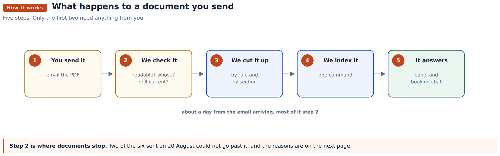
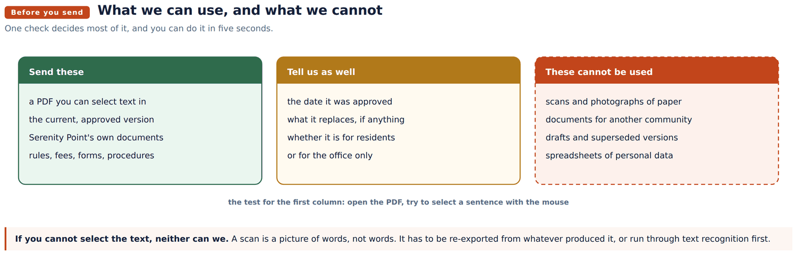

Handover document
Service Agent: application spin-off and plumbing handover
How the booking platform was built from the shop, what changed between them, and the procedure for standing either one up on a new machine.
Abad Naseer · 14 August 2026 · every command run against the live server
The community assistant answers residents from the association's own documents and from nothing else. When it does not have a document, it says so rather than guessing.
So adding a document is how the assistant learns something new. This page is what to send, what cannot be used, and what happens next.
Where the assistant is: https://serviceagent.fordev.fun Where to send documents: reply to this email with the files attached.

Nothing is retyped and nothing is summarised. The document is cut into sections and the assistant quotes from them, so what a resident is told is what the document says. If the document is wrong, the answer is wrong, which is why the version you send matters.

The five second test. Open the PDF, and try to select a sentence with your mouse. If the text highlights, we can use it. If nothing highlights, the file is a picture of a page rather than a page, and it has to be re-exported from whatever produced it.
Word documents are fine. So are PDFs exported from Word. It is scans and photographs of printed paper that cannot be used.
Four short answers, in the body of the email. They take a minute and they prevent the assistant giving confident answers out of a document that no longer applies.
| Question | Why it matters |
|---|---|
| What is it called, and when was it approved? | Two documents often cover the same subject. The date decides which wins. |
| Does it replace something we already have? | If it does, we remove the old one. If we are not told, both stay and the assistant will report that they disagree. |
| Is it for residents, or for the office only? | Anything you send can be quoted to a resident. Internal notes and fee schedules the office uses should not be sent. |
| Does it contain anyone's personal details? | Names, addresses, account numbers and signatures should be removed first. |
Turnaround is about a day from the email arriving.
| Document | Status |
|---|---|
| Rules and Regulations, approved 12 December 2024 | Live |
| Application package and rules, L&C Royal Management | Live |
| Architectural Modification Form (ARB) | Live |
| Amenities Fees, GRS Management | Live |
| Temporary Parking Pass Request | Live |
| City of Lauderdale Lakes Code Compliance Handbook | Loaded, but not used for Serenity answers |
| Application for Occupancy, Serenity Point | Cannot be used, scanned image |
| Three Lakes Design Standards | Cannot be used, scanned image |
These are not faults in the assistant. They are disagreements between the documents, and the assistant currently handles each by giving both answers and naming the document each came from. Tell us which is right and it will give one answer instead.
1. Minimum lease term. The application requirements say one year. The use restrictions say no lease shall be less than six months.
2. Pets. Rule 13 of the Rules and Regulations reads as a total ban on keeping animals. The management pack allows domestic pets and bans only keeping animals commercially.
3. How long a decision takes. The board has thirty days to decide on an owner or tenant. The application package says the process may take fifteen business days. The ARB form says thirty to forty five days.
4. Working hours on site. Rule 18 allows construction Monday to Friday from 7:01am to 7:59pm. The ARB form allows contractors from 8:00am to 6:30pm Monday to Friday, and forbids Sundays, which Rule 18 permits.
Also worth confirming. Three association names appear across the documents: Serenity Point Homeowner's Association Inc., Serenity Community Association Inc., and Serenity Community Homeowners Association. Two management companies appear as well, L&C Royal Management and GRS Management.
The Application for Occupancy and the Three Lakes design standards are both scans. Eleven pages and twenty three pages of pictures of text, with no text inside them.
Two ways forward, whichever is easier for you:
which needs checking afterwards because recognition makes mistakes on tables and handwriting
Until then the assistant will say it does not have that information, rather than guessing at it.
The Lauderdale Lakes handbook is loaded but held apart. Serenity Point is in Miami Lakes, and answering a Serenity resident out of another city's code would be wrong. The assistant will only use it if a question names Lauderdale Lakes.
If you send documents for another community you manage, tell us which community they belong to and we will keep them separate in the same way.